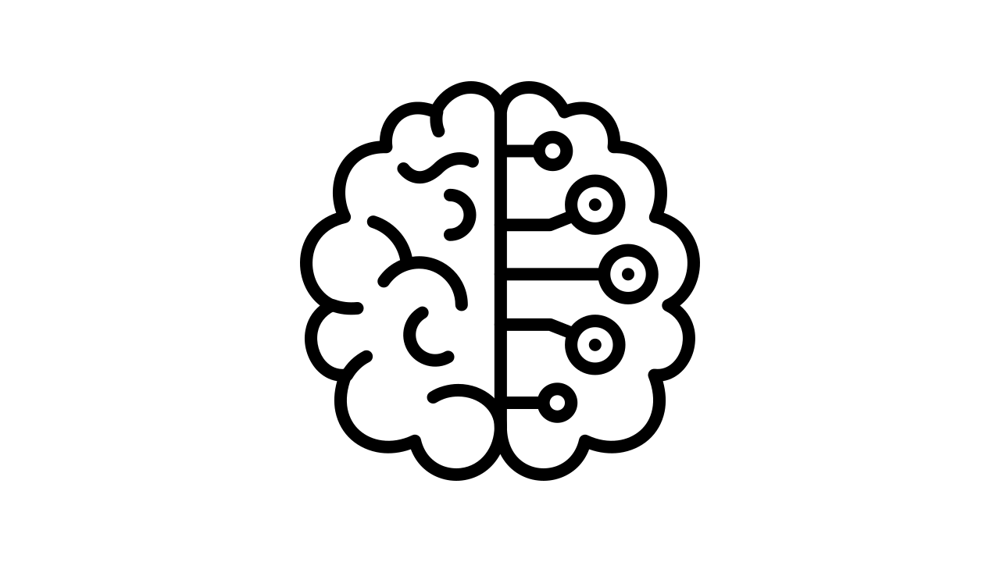

Machine Learning Portfolio
A portfolio of various machine learning models used to explore and train several different datasets and analyze them.
Comet Epacse Runner Game

My first large scale video game I designed and developed in a small team. Scripted object movement using C# in Unity, designed and implemented the entire games' terrain, created 3D object models, and in charge of the UI and scene transitions of the game.
Degree Plan and Audit Tool
A web application where I served as a major contributor to the back-end and database of the tool. I designed and implemented the way the tool reads in student transcripts, created our application's built-in database using JSON, and played a major part in how the application updates its database using transcript information and user input.
Lovify

A web application using machine learning models such as K Nearest Neighbors and cosine similarity to determine the similarity between two user's Spotify music tastes and match them so they can become friends. I served as a full-stack developer, working on both the machine learning models used to match the users as well as the front-end UI of Lovify. The project was created primarily Python, with HTML and CSS templates coded to be used with flask.
Commencement Day Simulator
My second video game developed in Unity using C#. The game is a first person shooter that follows a student to the commencement stage to retrieve their degree but is prevented from doing so until they defeat Temoc. The game takes inspiration from the FPS game Ultrakill. I served as the Team Lead, managing tasks amongst the team. I created and designed the game environment while also implementing some of the scripting.